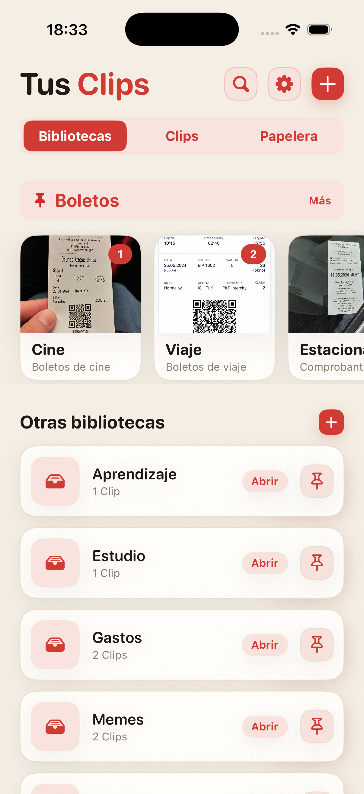
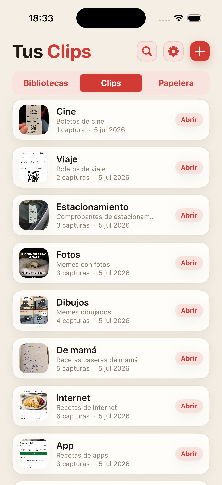
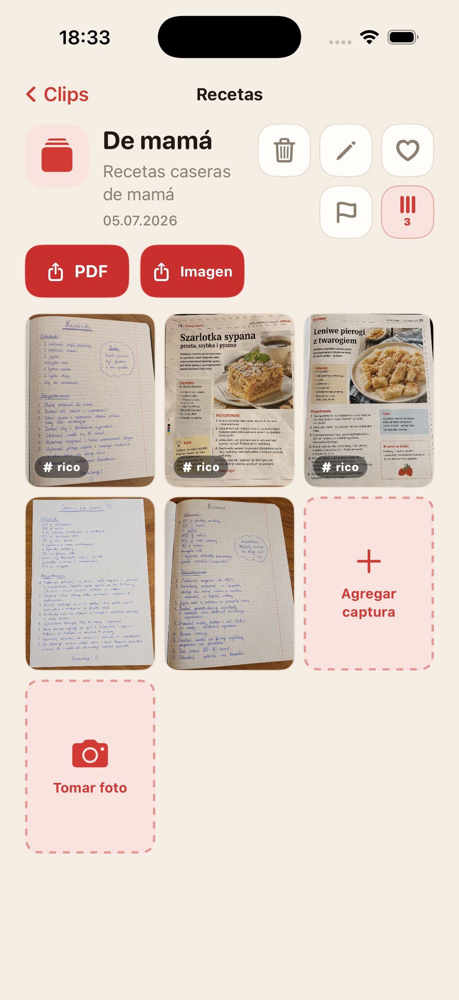
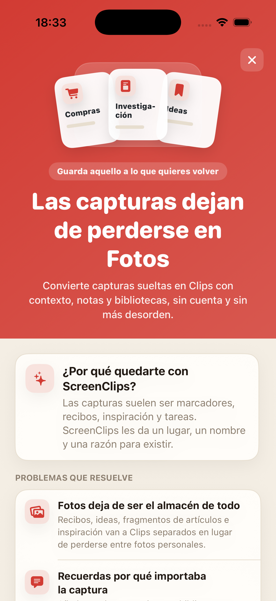

Las capturas se pierden entre todo
Guardas algo importante y, una semana después, estás deslizando en Fotos como si buscaras un comprobante en una caja vieja.
Convierte capturas sueltas en Clips con nombre, nota y biblioteca propia. Sin cuenta, sin nube y sin estar buscando en la galería cada vez que necesitas algo.

Recibos, recetas, boletos, ideas y fragmentos de artículos terminan junto a selfies, memes y fotos al azar. Todo está guardado, pero encontrar la captura con la dirección del hotel puede ser otra historia.
Guardas algo importante y, una semana después, estás deslizando en Fotos como si buscaras un comprobante en una caja vieja.
Muchas veces la imagen sola no basta. ScreenClips te deja ponerle nombre y nota a cada Clip.
Compras, trabajo, viajes y estudio merecen su propio lugar, no una pila interminable dentro de Fotos.
Separa recetas, recibos, boletos, investigación, notas de estudio o cualquier cosa que quieras volver a encontrar.
Un Clip reúne todo alrededor de algo concreto. Tiene nombre, descripción y sus propias capturas.
Abre una biblioteca, elige el Clip y sigue justo donde te quedaste.

ScreenClips no intenta adivinarlo todo por ti. Te da una estructura simple: biblioteca para el tema, Clip para el asunto concreto, capturas e imágenes adentro.
Reúne materiales dentro de Clips y sigue agregando conforme crece el tema.
Convierte un Clip en un archivo claro cuando quieras enviarlo o guardarlo fuera de la app.
Favoritos, banderas y orden donde antes solo había scroll infinito.

ScreenClips funciona de forma local. No necesitas crear una cuenta ni entregar recibos, notas o planes a otro servicio solo para tener orden.
Premium no hace la app más complicada. Solo te da más espacio para bibliotecas, Clips y capturas. El precio se muestra en App Store.
Descargar enApp Store
No. Si quitas una imagen de un Clip, el original sigue en Fotos.
Sí. ScreenClips está pensada como un organizador local en tu iPhone.
No. ScreenClips no requiere cuenta para organizar tus Clips.
Sí. Cuando pertenecen al mismo Clip, puedes agregar capturas y fotos.
ScreenClips ordena lo que guardaste para "luego". Esta vez, ese "luego" sí se puede encontrar.
Descargar enApp Store